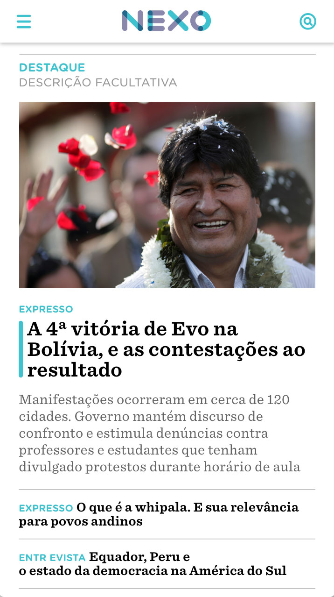
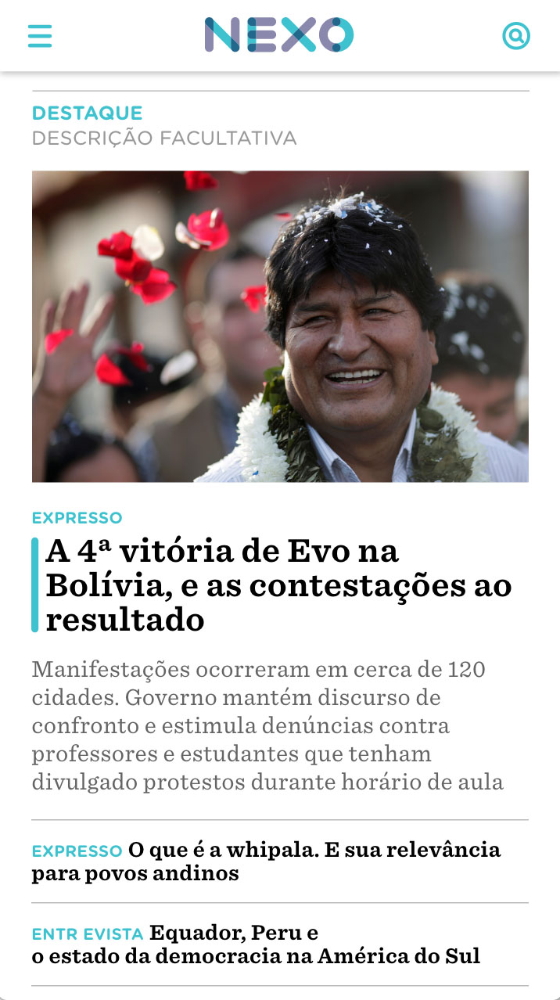

nova home do nexo jornal
nexo jornal — 2021 [em implantação]
A nova home do Nexo é um dos maiores projetos da equipe de arte do jornal. A página inicial que estava no ar havia sido desenhada em 2016, e readaptada em 2019, mas não correspondia mais à produção da redação do Nexo, e também às novas maneiras de navegar e consumir jornalismo online.
Foi feito um trabalho intensivo de pesquisa e prototipação liderado por Guilherme Falcão. A página foi desenhada lado a lado com os editores do Nexo, para entender suas demandas: criar uma página dinâmica, que responda aos acontecimentos e à produção diária do jornal, e que possa ser modificada de forma simples e principalmente rápida, como pede o ritmo de um jornal.
O trabalho também foi realizado em conjunto com a equipe de desenvolvedores, para que entendessemos as possibilidades do CMS e da biblioteca React. O layout foi desenhado de forma a corresponder às atualizações de back-end no planejamento da equipe de tecnologia.


 



construção
Minha principal atribuição no projeto é como ponte entre o layout desenhado e a equipe de programadores — transformar um desenho inicial em um layout pronto para ser desenvolvido.
A estrutura da página foi dividida em grandes módulos, que podem ser reposicionados pelos editores. Cada módulo tem posições específicas, os componentes, que podem ser ocupadas por qualquer conteúdo do Nexo. Dentro dessas posições, o conteúdo é mostrado seguindo as regras de visualização de cada componente.


Divisão da home em módulos, formados por componentes
Componentes com cores de fundo ou detalhes coloridos se adaptam à cor do tipo de conteúdo que ocupa sua posição, de acordo com a paleta de cores do jornal.
Alguns módulos, como o bloco principal, tem mais de uma possibilidade de layout, podendo dar grande destaque a uma notícia bombástica, por exemplo.

Mapa da construção da home por meio dos módulos
Além disso, foram elaboradas regras para que a disposição dos conteúdos na home definida pelos editores se adapte à qualquer tela de qualquer tamanho — sem perda de hierarquização ou conteúdo. O grid responsivo reposiciona os componentes automaticamente.
Planejamento de grid e responsividade dos componentes
Layout final
O resultado do trabalho pode ser visto no vídeo abaixo. A nova home do Nexo está em implantação pela equipe de tecnologia — que decidiu fazer um desenvolvimento gradual. O primeiro bloco já está no ar.
Este projeto foi desenvolvido usando a ferramenta Adobe Xd, com layout em conjunto e direção de Guilherme Falcão